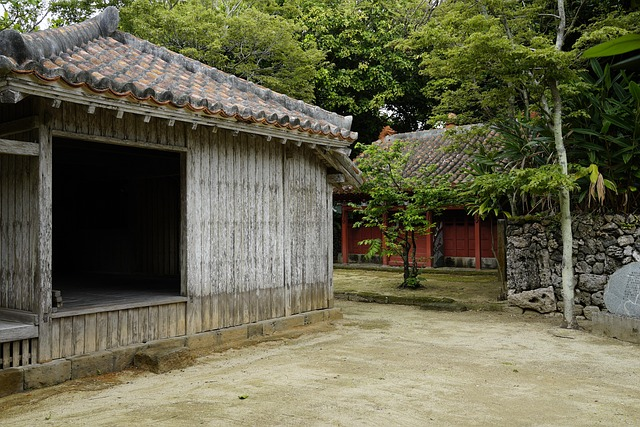

Japan gehört zu den Ländern mit einer der höchsten Lebenserwartungen
weltweit. In vielen Regionen, insbesondere in Okinawa, dem sogenannten
„Land des Langzeitlebens“, sowie in anderen langlebigen Gemeinden wie
der Insel Kyushu, erreicht die durchschnittliche Lebenserwartung oft
Werte von 85 Jahren oder mehr bei Frauen und knapp über 80 Jahren bei
Männern.
Vor allem auf Okinawa, Kagoshima (Kyushu), Okinawas Nachbarinseln,
sowie bestimmte ländliche Regionen, wie Teile von Ishikawa, Miyazaki
und Kyōto-Präfekturen gibt es viele Hundertjährige.
Die Geheimnisse der Langlebigkeit in Okinawa:
• Hara Hachi Bu: Ein wichtiger Grund für die Langlebigkeit
ist die Praxis, nur so lange zu essen, bis man zu etwa 80 % satt ist,
was Überessen verhindert und den Körper schlank und gesund hält.
• Sozialer Zusammenhalt: Okinawa hat eine starke Gemeinschaft, in der
die Menschen oft bis ins hohe Alter sozial aktiv sind, zum Beispiel
durch Karaoke.
• Gesunde Lebensweise: Neben der Ernährung spielt auch eine aktive
Lebensweise und eine allgemein gesunde Lebenseinstellung eine wichtige
Rolle.
Allgemein spielt sich der Großteil der sehr alten
Bevölkerung in ländlichen oder kleineren Gemeinden ab, oft mit starker
Gemeinschaftsbindung und weniger urbanem Lebensstil. Laut
internationalen Berichten gibt es ca. 60.000 bis 70.000 Menschen in
Japan, die 100 Jahre oder älter sind.
Die Gründe für diese Langlebigkeit sind vielfältig: soziale Strukturen
und enge Gemeinschaften fördern regelmäßige soziale Kontakte und ein
Gefühl der Zugehörigkeit; eine traditionell frische, meist kleine
Mahlzeitenserie mit viel Gemüse, Fisch und weniger rotem Fleisch
tragen zu einer gesunden Ernährung bei; und ein aktiver Lebensstil,
der auch im hohen Alter erhalten bleibt, sei es durch Spaziergänge,
Gartenarbeit oder sanfte Bewegungsformen.
Zudem spielen kulturelle Rituale, Stressreduktion durch
Entschleunigung im Alltag und ein starkes Gesundheitsbewusstsein eine
Rolle. In Okinawa wird oft
von den „sechs Säulen der Gesundheit“ gesprochen: positives Denken,
enge Gemeinschaft, Sinnhaftigkeit der Lebensführung (Ikigai),
Ernährung, Bewegung und ausreichender Schlaf.
Medizinische Versorgung ist gut, Präventionskultur und regelmäßige
Checks tragen dazu bei, Erkrankungen früh zu erkennen und zu managen.
Allerdings muss man beachten, dass individuelle Werte variieren und
die hohe Durchschnittslebensdauer teils regional abhängig ist. Wer
Japan besucht, erlebt dennoch lebendige Beispiele von Lebensqualität
bis ins hohe Alter – eine Mischung aus Tradition, Ernährung, sozialer
Vernetzung und aktivem Lebensstil.